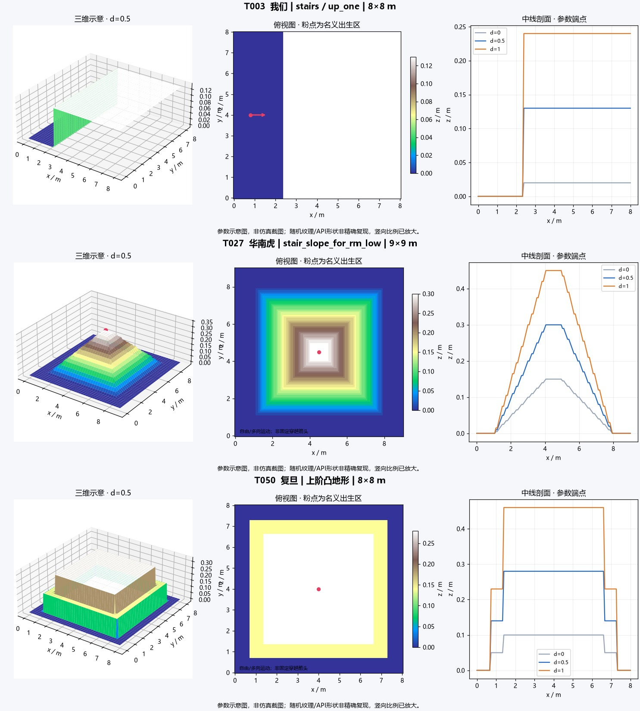

我们 × 华南虎 × 复旦：全阶段训练对照
核对日期：2026-11-15，Asia/Shanghai。本文是当前本机源码及发布配置审计，不是实车性能排名。
后续本地revision 9已对traverse小转向沿+x路段恢复progress/stuck，并收紧路线低速评分，critic375→378；本对照表与配置附录保留此次审计快照，不能当作后续运行配置。最新变更见路线修订说明，云端尚未更新。
阅读导航
附录保留完整字段、零权重、继承结果、公式文件和行号。主表是解释，不用单个数字替代完整生效逻辑。
1. 版本和范围
| 对象 |
范围 |
证据边界 |
| 我们通用配置 |
P1-flat/landing/stairs/recovery，P2-spin，P3-jump/tunnel，7阶段 |
SRM许多机械量和指令仍null，不代表可正式训练 |
| 我们参考仿真 |
scut_p1、scut_p2、robot参考模板 |
是我们的框架套SCUT机器人，不是SCUT原训练；无scut_p3专用模板 |
| 我们实际运行 |
fd012a9 revision7保存配置 |
已与远端policy/robot哈希核对；新平地课程、free门槛放宽尚未上线 |
| 华南虎 |
4类发布策略、12份env/agent快照；本机15个gym注册条目 |
历史配置和当前实现分开；Play不是独立训练，算法变体不是发布模型已采用的证据 |
| 复旦 |
plane/jump两个当前入口，48份历史logs配置 |
AST合并base/derived；历史terrain.py未随每份快照保存，不按名称推断实际地形 |
只读第三方源码。报告覆盖本机三个项目的已发现配置，不声称覆盖未公开代码或最终实车部署。
2. 阶段与训练脚本对应
| 功能 |
我们 |
华南虎 |
复旦 |
| 站立/行驶 |
p1-flat |
flat_and_rotation混训普通运动/高速自转 |
plane当前和历史行驶实验 |
| 落地 |
p1-landing，外生空中出生首次事件 |
rough_dash含空中出生及airborne状态机 |
未见独立landing入口；jump/rough会落地，不代表同款结果奖励 |
| 台阶/粗糙 |
p1-stairs |
rough_dash、rough_rotation_stair，目标不同 |
plane下历史上台阶配置 |
| 倒地起身 |
p1-recovery |
predefined_reset_ground混入训练 |
recover/腿熊历史配置，仍用plane入口 |
| 高速自转 |
p2-spin独立网络 |
flat_and_rotation特殊模式和rough旋转 |
angz系列扩大yaw范围 |
| 旋转中定向平移 |
P2固定world yaw参考 |
rotation_translation的gimbal yaw相关参考及特殊模式 |
所查入口无同款参考系合同，vx+wz组合不是等价 |
| 主动跳跃 |
p3-jump，事件制目标与结果 |
当前源码有jump_takeoff，但12份发布策略不等于独立跳跃验收 |
jump入口持续腾空/向上速度/收腿奖励 |
| 跳横梁后落地 |
p3-tunnel |
所查发布配置无同款 |
所查入口无同款 |
我们统一isaac/scripts/train.py按task选择；SCUT按gym注册任务和runner；复旦分别从plane/jump运行wheel_legged_gym/scripts/train.py --task wheel_legged。具体入口和注册映射见附录。
我们继承链：flat→landing→stairs→recovery；flat→spin；landing→jump→tunnel。跨合同使用initialize-from取Actor，resume要求合同相容。两校历史目录不自动等同此链。
2.1 华南虎实际记录了哪几类训练
可以确认四类发布训练方向，不应写成固定顺序的四个必经阶段：
| 类别 |
作用 |
与我们七阶段的关系 |
| flat_and_rotation |
平地站立、行驶、高速自转的基础策略 |
覆盖P1-flat以及部分P2自转能力，未拆成同款两个任务 |
| rough_rotation_stair |
地形中自转、运动及台阶适应；不同快照地形不同 |
接近P1-stairs与粗糙自转混训，不是我们的独立landing→stairs串行链 |
| rough_dash |
较高速地形运动、飞坡/落地；含空中出生和airborne处理 |
同时覆盖部分landing与stairs能力，没有证据显示先跑同款独立landing任务 |
| rotation_translation |
自转过程中按参考方向平移 |
接近P2的定向平移目标，但参考系、模式混合和奖励不同 |
起身能力还通过predefined_reset_ground混入部分配置；所查发布记录没有证明一个单独命名且必经的recovery训练阶段。源码存在jump_takeoff和算法变体，但不能据此补出一个已经训练并部署的jump阶段；没有同款tunnel发布记录。轻量化模型是模型版本，不另计一种运动阶段。
README与保存launch_checkpoint共同支持的链路：
- flat_and_rotation（2026-07-19_09-14-50，model_8000）→ rotation_translation（2026-07-28_00-39-42）。
- 同一flat（model_8000）→ rough_rotation_stair（2026-07-23_10-19-59，后续取model_2000）→ rotation_translation（2026-07-28_23-17-10，后续取model_3000）→ 2026-07-29_18-15-16继续训练。
- 同一flat（model_8000）→ rough_rotation_stair（2026-07-23_16-23-21），属于另一分支，不要求先经过第2条的rough模型。
- rough_dash（2026-07-19_19-15-07）保存的来源是另一flat运行2026-07-14_22-59-05/model_5500；不能把它硬接到7月19日的flat分支。
- 轻量flat（2026-07-29_23-20-03/model_8000）→ 轻量rough_rotation_stair（2026-07-30_09-16-27）。轻量rotation_translation（2026-07-30_14-44-58）则记录来源2026-07-30_10-58-43/model_2000；这份父运行在当前12份env快照清单中缺失，不能用09-16-27替代。
这些箭头表示保存记录的检查点来源。多数跨分支launch_checkpoint.resume_training=false，不意味着恢复了优化器和全部训练状态；7月29日18:15的rotation续训记录为true，必须区分“从已有权重继续学习”与完整resume。
来源：SCUT发布说明及附录B各配置的launch_checkpoint。训练能力效果描述仅为作者说明/配置目标，不当作本报告独立验收结果。
2.2 复旦实际记录了哪几类训练
工程入口只有plane与jump两套；按历史配置的训练目标可归为五类，而非五个已证实串行阶段。
| 类别 |
已发现的配置证据 |
作用 |
| 基础运动 |
plane当前入口及linx、orientation系列历史配置 |
站立、前后运动、转向和高度跟踪 |
| 高速自转强化 |
angz+、angz++、angz+++及部分recover_angz系列 |
扩大角速度命令范围；属于plane实验分支，没有独立rotation入口 |
| 起身/恢复 |
recover_from_lied_on_ground、腿熊系列 |
起身/恢复目标与运动混训；具体姿态初始化、奖励须看对应保存实现 |
| 台阶/混合地形 |
上台阶1/2/3、上台阶3_angz+、v1/v2/v3及随机地形系列 |
台阶与地形适应；“上台阶1”保存mesh仍为plane，不能凭名字算已启用台阶 |
| 主动跳跃 |
jump当前入口及p60.50.2历史配置 |
腾空、向上速度、收腿、伸腿等连续奖励训练 |
没有找到独立landing和tunnel入口，也没有发现与SCUT rotation_translation等价的云台/世界参考系定向平移阶段。历史配置中会发生落地，不等于有独立落地阶段。
复旦README明确划分plane/jump，使用说明提供--resume/--load_run/--checkpoint用法；但多数保存runner配置是resume=false、load_run=-1，无法还原所有实际命令行覆盖。目录中的“继续训练”“v1/v2/v3”只能作为线索，不能据此证明完整的父子检查点链。因此不把“平地→自转→起身→台阶→跳跃”画成已确认训练顺序。
来源：复旦README、训练命令说明及附录C的每份保存配置与实现。
2.3 复旦encoder和Actor MLP是否同时训练
同一训练流程、同一轮采集数据中，两者都会学习；但不是同一个损失端到端反传，也不是同时执行一次optimizer.step。 当前plane/jump的ActorCriticSequence路径采用以下顺序：
- 采集rollout：历史观测→encoder→估计latent；当前观测与latent拼接→Actor产生动作。
- PPO更新阶段：优化器只包含Actor、Critic和动作分布std。Actor输入使用latent.detach()，所以PPO策略损失不向encoder反传。
- encoder更新阶段：同一轮rollout另建encoder小批次，extra_optimizer只含encoder参数；用latent前三维与critic观测前三维的MSE监督速度估计。前三维标签是按观测比例缩放后的真实机体系线速度，不能脱离normalization理解为裸m/s。
- latent_dim>3的历史变体还对额外维度加入观测去噪监督；标准latent_dim=3只用速度监督。完成两阶段更新后清空rollout，继续下一轮采样。
标准配置为5×25=125维历史→128→64→3；Actor接收25+3=28维，MLP为128→64→32→6。没有必需的“先把encoder单独训完再训练Actor”的预训练阶段，也不是训完Actor再补encoder。
推理时encoder和Actor仍串联执行，不需要仿真真实速度或Critic。detach影响训练梯度流，不妨碍推理前向计算。启用其他policy_class_name时应重新核对，不能将本结论套到所有历史算法。
依据：Actor拼接及detach、优化器分组、先PPO后encoder更新。两套当前入口的相应代码全文见附录D。
3. 地形图片与覆盖
全部图片是参数/形状示意图，不是Isaac或MuJoCo运行截图。统一视角、米制轴；竖向视觉比例放大。随机纹理、内置API细分和历史种子不作精确复现。d=0/0.5/1是参数端点，不能声称训练实际一定采到1。


图册列出每种地形的配置范围、来源、使用策略；复旦代码中未启用的踏石/沟槽/坑另外标明。井字对照中的复旦离散障碍只是结构对照，不是等价替代。
| 阶段 |
我们的实际地形 |
与两校的关键差异 |
| flat/landing/jump |
平面；landing改变出生状态 |
复旦当前plane/jump也为plane；SCUT rough_dash落地在混合地形中训练 |
| stairs |
8×8m、8行20列；平地30%，单上/单下各10%，双上/双下各5%，单混合/快混合各5%，双混合10%，井字10%，坡/rough各5% |
比SCUT更偏独立1/2级路线，缺连续细阶梯、凹坡、断崖组合 |
| recovery |
平地30%，单/双上下阶各20%，坡/凸条/rough各10% |
仍用早期steps几何，非stairs十一类；仍有progress/stuck |
| spin |
9×9m；平地50%、rough30%、坡20%；坡角±0.1rad，坡面出生 |
SCUT rotation常混井字/细阶/凹坡；我们并非完整移植 |
| tunnel |
宽0.8m、长2.9m，护栏高0.2m，梁顶0.27m、沿程长0.35m、厚0.02m |
梁高课程0.10/0.15/0.20/0.27/0.30m；部分尺寸仍null；两校无同款验收 |
我们stairs每级高2–24cm、踏面0.8m，双级是两次单级高度；SCUT D大阶15–35/40cm、踏面1.5m；R实际地形没有这些大阶，只有0.5–4cm细阶。图形尺寸不是通过能力证明。
我们井字间距0.55–0.70m、宽8–12cm、高2.5–4.5cm，密集重复；SCUT每向2或4条、宽5–20cm，D高2–6cm、R高1–3cm。我们的井字比R更高且更密。
SCUT比例必须归一化再取整数列：D(7月19日)平地1/13=7.69%、井字2/13=15.38%；R(7月30日)平地3/14=21.43%、井字2/14=14.29%。不能将proportion=0.3直接称30%。每份附录均计算实际列数。
我们stairs粗糙是在0.2m网格采样正负噪声连三角面；该路径未使用同块的rough_noise_step_m/downsampled_scale。spin/recovery粗糙则调用HfRandomUniformTerrainCfg。SCUT用原生heightfield，不能把三者同名rough当同几何。
复旦当前plane/jump没有启用地形；历史trimesh六槽按现有代码依次为平地/光滑坡/粗糙坡/下阶/上阶/离散障碍。坡度0.5d，粗糙坡噪声±(0.05+0.05d)m，台阶高0.05+0.18d、宽0.7m、平台4m。stairs v2比例[0.3,0.2,0,0.3,0.2,0]。历史目录缺terrain.py，不能保证历史生成器与现有完全一致。
4. 指令与参考系
| 配置 |
vx / wz / 高度范围 |
采样与模式 |
| 我们参考P1-flat |
±2.7m/s、±5rad/s、0.20–0.35m；冲刺±3；组合wz±3 |
站立/直行/自转/组合/冲刺/刹停反向10/25/15/25/10/15%；指令3–15s、高度2–6s |
| 我们landing |
P1底座；空中阶段vx±2.5、wz±π/2 |
40%空中出生；80%出生vx=命令+±0.3m/s，其他独立采样；冻结落地窗口命令 |
| 我们stairs |
按十一种地形分别限制，附录完整列出 |
flat四类各25%；grid/rough为15/35/20/30%；台阶坡道轴向；3–7s |
| 我们P2 |
平移0–0.75m/s；自转±[7.54,9.42]/±[9.42,11.31]各半；h0.20–0.35 |
固定world yaw平移方向，独立网络；不是普通body vx |
| 我们P3 |
行驶范围、可行跳高、腿长等仍null |
jump按事件触发；tunnel按位置触发、wz=0、目标=本回合梁高+3cm |
| SCUT普通 |
vx±2.7、wz±2π、h通常0.20–0.42 |
5–15s；10%standing、50%heading配置；特殊模式再覆盖 |
| SCUT特殊自转 |
±[2π,3.25π]和±[3.25π,4.5π] |
非standing且满足年龄条件后分桶；不能按配置比例直接视为每地形实际占比 |
| SCUT旋转平移 |
平移0–0.7或0–0.75、h0.20–0.40、自转约±[7.54,11.31] |
gimbal yaw参考、仅特定special mode激活；仍混普通运动 |
| 复旦current plane |
vx±2、wz±2、h0.10–0.20 |
三项独立均匀、5s，非我们离散模式概率 |
| 复旦stairs v2 |
初始vx±2、wz±4、h0.09–0.33 |
该快照课程最高vx±2.5、yaw±6 |
| 复旦自转历史 |
部分angz为±7/10/13；recover历史有±18 |
不等于云台/世界定向平移；每份实际范围见附录 |
| 复旦jump |
vx±2.1、wz±2、h0.12–0.15 |
20s；奖励里的空中world_z目标0.65另定义，不是height命令 |
独立flat参考上限当前仍0.35m；新stairs flat课程最终0.4389m，不能把文档计划说成独立flat已经改好。P2参考评测延迟仍0/0，是本次发现的待修一致性问题；本报告不改。
复旦commands是[vx,wz,height]；我们command是[vx,vy,wz]另存height。SCUT台阶非heading±0.1不等于heading也±0.1：闭环仍可到普通上限±2π；我们台阶限±1、坡限±0.5。
5. 奖励比较口径
我们策略dt=0.01、物理dt=0.002；SCUT发布策略dt=0.02、物理dt=0.005；复旦通常dt=0.01、物理dt=0.005。连续项乘dt；我们事件项不乘dt。
我们连续单项裁剪±2.5/步，即约±250/秒；复旦plane常±1×dt、jump±2.5×dt，即±1/秒和±2.5/秒；SCUT汇总未见同款裁剪。因此不能直接用原始权重比较实际惩罚。
我们termination=-4/次；SCUT=-200×0.02=-4/次，非50倍差异。SCUT D airborne倍率6另可达-24。动作差分没除dt，同一平滑连续轨迹在100Hz的一阶平方约是50Hz的1/4、二阶约1/16。关节加速度已经除dt或由仿真提供，不能照搬该倍数。SCUT joint_acc精确缓存时间窗未找到本地API定义，待确认。
6. 基础运动奖励与定义
| 项 |
我们P1-flat |
SCUT主要发布值 |
复旦current plane / stairs v2 |
| vx指数 |
+1 exp(-ev²/0.5) |
+1；D+1.25；指数误差预裁±1 |
+1 exp(-ev²/0.25) |
| vx误差 |
-8(0.25ev)² |
-0.1或-1(0.25ev)² |
enhance +1但函数exp(-ev²/2.5)-1≤0 |
| wz指数/误差 |
+1 exp(-ew²/0.25)，-1(0.5ew)² |
+1，负项-0.1或-1；指数误差预裁±0.8 |
+1指数；current另enhance，v2未启用该enhance |
| 高度紧核 |
+1 exp(-eh²/0.001) |
+1同核 |
+1同核 |
| 宽核高度 |
初始+2，flat退火；landing1.5，stairs1 |
保存配置大多0 |
v2 height_enhance为非正项，不是正宽核 |
| 高度平方罚 |
-(10eh)² |
同公式；airborne可关闭 |
无同款独立项 |
| 姿态 |
roll/pitch各+1指数及速度相关平方罚 |
多数类似，个别版本改L1/tanh |
orientation当前-100、v2-20，gx²+gy²，再单项裁剪 |
| 零速漂移 |
-2×航向系速度L1 |
-1/-2机体系L1；D未启用 |
current/v2未启用；函数stand_still本身是关节偏离，不同定义 |
| 对称 |
leg_symmetry=0；no_fork二值/平方各-1 |
joint_pair项0，no_fork各-1 |
nominal_state=-1腿角差；jump另加10×腿长差 |
| 接触 |
-4二值，3N |
-2二值，D airborne×25 |
collision=-1按接触刚体数量，0.1N；空名单时无效 |
| 腿速度 |
-0.005四髋 |
-0.005四髋 |
current -5e-5，v2 -2e-5，四髋 |
| 加速度 |
-2e-6四髋 |
-5e-7四髋，wheel_acc另-1e-8 |
current -2.5e-7，v2 -1e-7，六关节 |
| 力矩 |
-1e-4 |
flat -1e-4，rough -1e-5 |
-1e-4，再裁剪 |
| 动作一阶/二阶 |
-0.01 / 腿-0.05、轮-0.01 |
多数相同数字但50Hz；变体另列 |
-0.01 / -0.01只取腿 |
定义差异：我们vx用yaw系世界水平速度；SCUT body_vx×cos(pitch)；复旦body_vx。我们竖直罚用world_vz减高度命令变化率；两校主要body_vz。我们no_fork平方只罚超过5cm的超量，SCUT罚全差值。
我们P1俯仰因子(3+exp(-actual_vx²/4))²，3m/s保留约60%；SCUT多数(2+2exp(-command_vx²/3))²，约28%；P2/P3各自参数见附录，不套P1。
我们P1/P2高度门控≤5cm全开、≥10cm关闭正跟踪与误差罚；SCUT D开启、R关闭、flat按版本变化。复旦未见同款门控。我们stairs取轮下局部地面，SCUT扫描均值（D空中另改轮相对高度），复旦按自身地面均值。
7. stairs分区权重
| 惩罚 |
我们flat |
台阶 |
grid |
slope |
rough |
SCUT D/R基值 |
| pitch |
-3 |
-2 |
-2.5 |
-2.25 |
-2.75 |
-2 |
| angular_xy |
-0.2 |
-0.05 |
-0.1 |
-0.15 |
-0.15 |
-0.05 |
| vertical_velocity |
-4 |
-0.5 |
-1 |
-1.5 |
-2 |
-0.5 |
| action_rate |
-0.01 |
-0.002 |
-0.005 |
-0.0075 |
-0.006 |
-0.01 |
| 腿动作二阶 |
-0.05 |
-0.01 |
-0.025 |
-0.0375 |
-0.03 |
-0.05 |
| 轮动作二阶 |
-0.01 |
-0.002 |
-0.005 |
-0.0075 |
-0.006 |
-0.01 |
| leg_joint_vel |
-0.005 |
-0.001 |
-0.0025 |
-0.00375 |
-0.003 |
-0.005 |
| leg_joint_acc |
-2e-6 |
-4e-7 |
-1e-6 |
-1.5e-6 |
-1.2e-6 |
-5e-7 |
| wheel_vel |
-1e-5 |
-2e-6 |
-5e-6 |
-7.5e-6 |
-6e-6 |
-1e-5 |
| joint_torque |
-1e-4 |
-1e-5 |
-3e-5 |
-5e-5 |
-5e-5 |
-1e-5 |
| wheel_power |
-1e-4 |
-1e-5 |
-3e-5 |
-5e-5 |
-5e-5 |
-1e-5 |
wheel_power在我们stairs非平地与SCUT均罚正功；我们flat罚绝对功，含制动。加速度豁免只在飞行、限定缓冲、台阶导轮支撑；其他稳定性项有各自mask，不把整张地形叫“全放宽”。
我们抬升取台阶高+[0.19,0.27]且不低于常规命令，上限弹簧几何减0.01m；检测保持、消失后0.3s；导轮支撑取消。SCUT D原命令+0.16、上限0.4、2s，时间差>0.14m可判墙timeout；R关闭。地图有40cm台阶不等于强制所有40cm立面完整通过。
我们机身、导轮、连杆接触可累计0.4s终止，2s回落；SCUT D/R非plane且use_gimbal时接触终止仅云台两刚体；D/R约0.2/0.4s连续计时、中断清零。复旦plane/v2空接触名单，与有权重不是一回事。
我们stairs与所查SCUT发布配置都没有+x/stuck奖励；我们recovery仍有。是否加方向无关运动约束是本项目设计，不叫恢复SCUT原配。
8. landing、jump与tunnel
我们landing只跟踪外生空中出生首次事件：进展预算0.75、成功+1.5、失败-1。轻导轮事件按触前下落速度扣分，≥1m/s视硬碰；支撑连续0.1s或首次接触后最多0.5s结束缓冲；成功需稳定0.5s，窗口3s。
空中轮居中有界罚-4/s、匹配实际机身前向速度有界罚-6/s、低于0.28m伸腿缺口罚-3/s（尺度0.1m），首次接触后关闭。没有空中零力矩+20或居中+10正收益。
SCUT D：零轮力矩+20、轮居中+10、方向轮速+10、短缺-10、接触峰值-10、接触后下落速度-1、关节限位-10、限位速度正则-100，均连续乘dt且有各自窗口。方向轮速看指令/实际vx同向且>1m/s时轮角速度0→10rad/s，不是精确地速匹配；R关闭airborne。
| 项 |
我们P3 |
复旦jump |
| 顶点 |
+5/事件，目标高度不足量指数 |
base_height_flight +6×exp(-6 |
| 落地结果 |
+3/事件 |
未见同款独立结果项 |
| 腾空 |
+0.15连续 |
+0.15连续 |
| 蹲腿 |
+0.5，事件阶段目标 |
无同款 |
| 起跳 |
+2.5，vz/目标起跳速度封[0,1] |
line_z +6正vz×flight；encourage_jump +1含时间/高度积累及正vz |
| 推蹬对称 |
+0.05左右轮力归一对称 |
无同款 |
| 收腿 |
+1.7，事件tuck阶段目标长度 |
+1.7，flight时朝0.16m |
| 准备/伸腿 |
+0.5，落地prepare |
takeoff_extend +0.5，接触且vz>0.15朝0.31m，不是同阶段 |
| 冲击 |
-0.0001/事件×(max髋力矩²+髋速度²和) |
无同款事件项 |
| 异步着地 |
-1/事件，触地差>0.05s |
无同款启用 |
| 非指令腾空 |
-1连续 |
持续鼓励flight，目标不同 |
P3引导会衰减，事件结果不乘dt；复旦jump每项受±2.5×dt裁剪，+6不等于能贡献+6/秒；vx跟踪函数内部还×2。tunnel另有越过后合法落地+5/次、障碍接触-5/s、梁顶接触-10/s，必须落在梁后地面；零跳回合梁藏地下。
9. rotation_translation与P2
我们spin_velocity/speed/heading正权重+1/+1/+5；向量/大小/方向误差-0.2/-0.2/-0.02。正项乘高度门控。SCUT相似正权重，但向量平方内部另乘0.5²、方向平方常内部乘4²且权重-0.2；speed_overshoot部分配置为0且只罚超速，不是我们双侧速度大小误差。SCUT特殊模式会屏蔽普通机体vx跟踪。
P2已在计算奖励前把requested_speed覆盖为translation目标范数，所以不能仅看初始化就认定非零平移被stand_still误罚。已核对这条覆盖路径，未发现该问题。复旦高速yaw不能据此称有同款定向平移能力。
10. 课程、观测、算法及其他定义
- 我们flat按完成回合窗口升级；stairs新增平地8级，4096有效回合，≥60%升/<20%降，仅本地。free新版容差[0.15m/s,0.30rad/s]+0.35|cmd|，两轴均分≥0.5，仍需3s表面曝光与结束恢复。
- SCUT发布curriculum=null与generator.curriculum=true并不矛盾：后者组织地形，不等于通过率升级。D/R额外高度课程关闭。边界按整图，允许跨块后切命令；我们stairs按当前块中性截断。
- 复旦当前源码位移>地块长/4升地形；历史stairs v2按其保存实现，见定义附录。地形/命令课程的开关组合决定是否生效，不按注释猜。
- 我们Actor35维、256→128→64→6，历史估计默认关闭；critic随阶段不同，stairs375并不代表所有任务。SCUT发布为普通PPO，网络普通/轻量版本分别列出；源码DreamWaQ/HIM/NP3O是可选注册，不是已发布模型实际启用证据。
- 复旦主要路径5×25历史，125→128→64→3监督估计速度，拼25维当前观测给Actor128→64→32；critic256→128→64。历史10帧/latent16实验单列。Actor使用detach latent，估计器独立监督更新。
- 我们可选历史估计器不是复旦原样复制：输入frames×35，输出3维机体系速度和2维轮接触，共5维；启用后Actor输入变40。默认frames=0，不能把“已有实现”说成当前模型已训练该能力。
- 我们gamma0.995@100Hz、SCUT0.99@50Hz时间尺度接近；复旦0.99@100Hz更短。rollout分别48/24/48步，均约0.48s。
- 我们先原始物理量逐分量clip再scale/nan_to_num；复旦整体obs/action常clip±100；不能把相同100当完全等价。
- 复旦倾倒条件为重力z>-0.1持续失败约1s；SCUT多数roll/pitch40°；我们基础40°、腾空放宽1rad，各接触名单/持续计时不同。
11. 未确认与验证边界
SRM/P3缺参保留null。历史SCUT配置与当前源码一致性、复旦未保存的历史terrain.py、原生heightfield/ArticulationData细节、实际接触净空与性能均不伪造结论。
图册以我们七阶段和两校已发现运行/发布配置实际选择的地形为覆盖范围。SCUT库中未被这些策略选择的通用地形函数不冒充训练覆盖；复旦未启用分支单列。算法注册变体沿共享地形定义，当前类源码保留在附录，但没有启动Isaac解析所有动态构造副作用。
本次只做配置静态解析、继承合并、源码定义提取、地形参数图及引用检查。未运行pytest、Isaac/GPU、MuJoCo动态试验；未改训练代码、未提交推送或重启云端。图册不是训练验证。